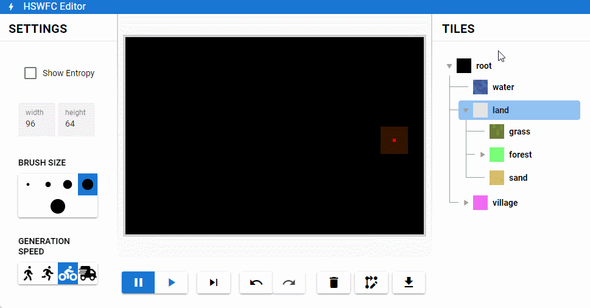

Hierarchical Semantic WFC (HSWFC) is an extension of Wave Function Collapse (WFC) (also known as Model Synthesis), an algorithm that can be used for constrained auto-tiling and procedural generation of environments. WFC works by taking some tiles, some adjacency constraints between them, and an empty grid as input, and then either produces a filled grid as output with a guarantee that the input constraints are respected everywhere on the grid, or it fails in case of a contradiction.
What HSWFC attempts to do, is to add (vertical) granularity to the level of detail of a tile, rather than just (horizontal) variation of tiles that WFC allows for by adding new tiles. Instead of just having cells that are either empty or collapsed, HSWFC allows defining partially collapsed states as special tiles, that are called "meta-tiles". These tiles are related to one another via a DAG with a single root, to establish a kind of semantic "consists-of" relationship among the (meta-)tiles, called a meta-tree.
HSWFC is intended to be used for human editing first, rather than just automated generation. The idea was to marry the two, a practice known as mixed-initiative editing, as the demo below shows. Meta-tiles make it easier for users to place tiles without having to consider exactly what constraints need to be respected, because they represent a partial superposition. Besides, now they can attach semantic labels to certain groupings of tiles.
To give a practical example: road tiles can have many variations of corners, straight pieces, T-junctions; it is terribly inconvenient to have to consider this before placing a road... But if you have a "
Feel free to play around with the [DEMO]. Below are some more resources and versions.
The algorithm is currently (as of Q4 2026) being upgraded and refined in order to make the hierarchical structure more meaningful, by actually considering the paths that are traversed through the meta-tree in constraint resolution. This allows several very interesting possibilities, such as constraint overriding for the same tile to behave differently depending on the meta-tile (essentially make a meta-tile act like a context), and also meaningful meta-tile adjacencies. Updates will follow soon (tm).